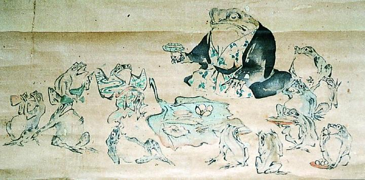

← 图鉴索引

紋付を着た大きな蛙と、子分である小さなな蛙の宴会。葉を盃にしている。
著作者：飯島光峨／出典：親書誌：A5_pushkin_0068：（蛙酒盛図；カエルノサカモリノズ）／日付：2011／資源識別子：A5_pushkin_0068_0001_0000
Copyright (c)2010- International Research Center for Japanese Studies, Kyoto, Japan. All rights reserved.